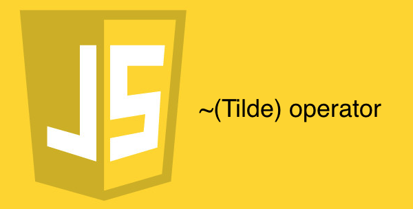
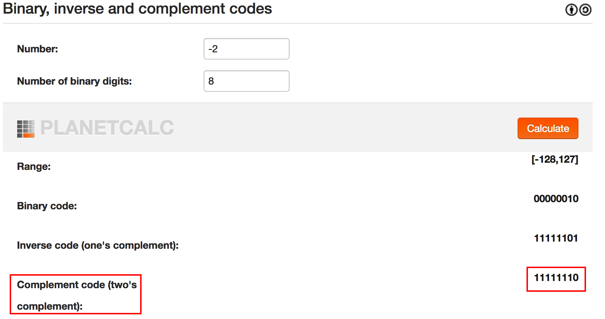

우리는 주로 ~라는 문자를 물결이라고 읽었다.
하지만 영어권 국가에서는 Tilde(틸드)라고 읽는다.
따라서 해당 연산자를 틸드 연산자라고 부른다.
해당 연산자가 기본적으로 어떤 일을 하는지 보자.
뭐하는 놈이니?
~ 연산자는 비트 단위의 연산자이다.
즉, 10진수를 2진수로 바꿔버린 후 연산을 진행한다는 것이다.
비트 단위의 연산자 중에 Not을 진행하는 연산자이다.
Not 연산자이므로 단항 연산자이다.
간단하게 어떻게 작동하는지 보자.
일단 1을 2진수로 바꿔보자.
00000001
여기서 틸드 연산자를 쓰면
~00000001
Not 연산자 이므로 0을 1로, 1을 0으로 역전시킨다.
11111110
위에 2진수가 -2인지 확인해보자.

-1의 비밀
유독 자바스크립트의 메소드를 보면 -1을 반환하는 녀석들이 많다.
- String.prototype.indexOf()
- String.prototype.charAt()
- String.prototype.search()
- Array.prototype.indexOf()
- Array.prototype.findIndex()
뭐 이외에도 더 있는지 모르겠지만 내가 아는 범위 내에서는 이게 끝이다.
주로 검색과 관련된 메소드 중에서
인덱스(number)를 반환하는 메소드에서
존재하면 해당 인덱스틀, 존재하지 않는다면 -1을 반환한다.
단순히 인덱스가 0부터 정수로 쭉쭉 뻗어가니
존재하지 않으면 0에서 가장 가까운 -1을 반환하는 게 타당해보인다.
하지만 틸드 연산자와 생각해보면 이 -1이란 녀석을 이용해먹을 수 있다.
일단 -1을 2진수로 표현하면
11111111
인데 틸드 연산자를 써서 역전시켜버리면
00000000
정수 0이 돼버린다.
0은 형변환 했을 때 false로 취급되는 falsy value이다.~-1 === 0이라는 점을 이용하면 조건식을 간결하게 만들 수 있다.
연산 속도를 한번 비교해보자.
~의 ~(~~)
기본적으로 Tilde 연산자는 소수점 아래 비트를 버리는 성질을 가진다.
Not 연산은 기본적으로 두 번 사용하면 원본값을 반환하는 성질을 가진다.
논리 부정 연산인 !은 단순히 true를 false로, false를 true로 역전시킬 뿐이지만
비트 논리 부정 연산자인 ~는 조금 다르다.
위에서 보다 싶이 소수점 아래 비트를 아예 버려버리는 성질이 있기 때문에
이 점을 이용하면 다음과 같은 효과를 낼 수 있다.